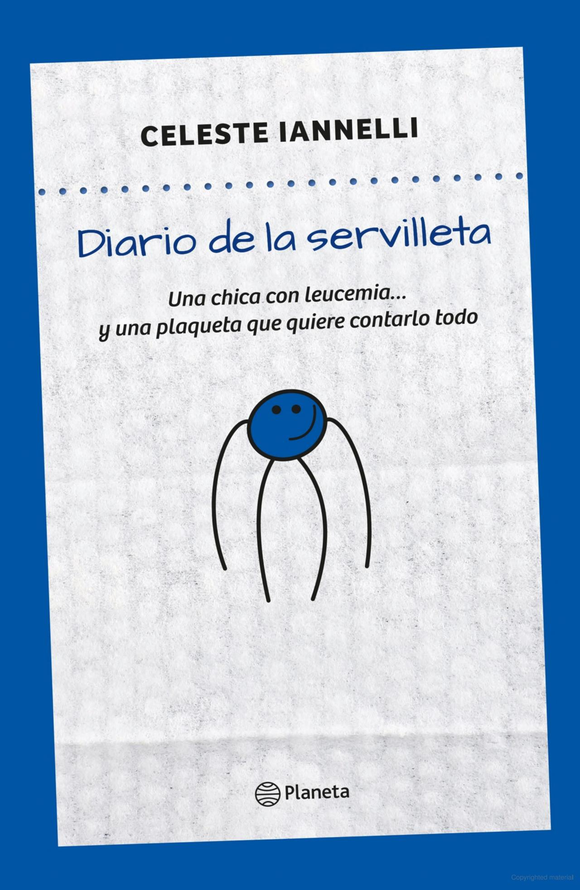
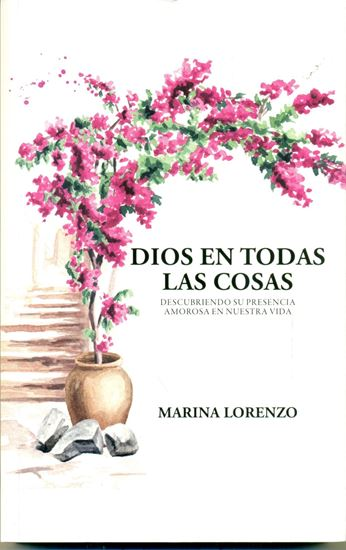

Fundaciones
Acontinuación describo lista de fundaciones que existen a nivel país en distintas provincias de la Argentina que ayudan de alguna u otra manera a pacientes oncológicos ya sea para adultos ó niños,adolescentes, jóvenes.
- "Fundación Flexer"
 Instagram: Fundación Natalí Dafne Flexer
Instagram: Fundación Natalí Dafne Flexer
 Mansila 3125 - CABA
Mansila 3125 - CABA - "CruZar"
Instagram: Red CruZar
Camarones 5549 Dto.2 - CABA. - "FundaMe"
Instagram: FundaMe Oncología Infantil
Av. Sarmiento (Prolongación Rivadavia) 1437 Este - Pcia. San Juan - Asociación Civil Sostén
- "F.A.E.H.E.R" -
 Fundación Faeher ONGs
Fundación Faeher ONGs
San Luis 101 - Paraná - Entre Ríos - Fundación....
- Fundación....
- Fundación....
- Fundación....
- Fundación....
- Fundación....
Libros
Acontinuación describo una lista de libros existentes de sobrevivientes de cáncer que motivan a pacientes oncológicos.

Diario en una servilleta
by Celeste Iannelly
Diario de la servilleta

Dios en todas las cosas
by Marina Lorenzo
lorenzomarina
De general a mudo
by Luis Ramón Payán Areché
lorenzomarina